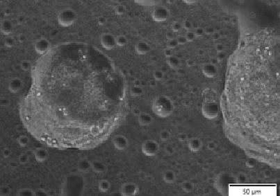
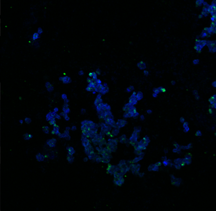

Position
Undergraduate Research Asisstant, part-time worker

Title of the project
Stimulus-triggered nano-formulations for targeting and prevention of persistent bacterial biofilms.
Main aim and duties
Main responsibilities of mine are
- Preparation of Dextran-in-PEG water-in-water Pickering emulsions
- Culturing HCT 116 or HELA cells to produce w/w DEX-in-PEG encapsulated cells to cell clusteroids by using w/w Pickering emulsions as templates.
- Preparation of a layer of cell clusteroids in microwell plates and deposition of protease-loaded shellac-core-shell microcapsules produced
- Inoculation of the cell layer with biofilm forming bacteria (S.aureus) and culturing for 24h.
- Ultrasonic triggering for triggering of Savinase release in the presence of antibiotic co-treatment.
Results of the project
The first results of cell spheroid production can be seen below
3D cell clusters from HCT 116 cell line
3D cell clusters under confocal microscopy
Information about the laboratory and superviser
- Location: Nazarbayev University, Block C4, lab 612
- Members: 8 active members
- Main research area: formulation of innovative colloid systems is also recognized by the industry
Additional information can be found here: Paunov Group